SM2ARTA™ is a multiuser, web-based platform accessible from any device connected to the Internet. There is no client software to install, no limit on the number of users, events, venues, or catalogued items, and a learning curve measured in minutes.
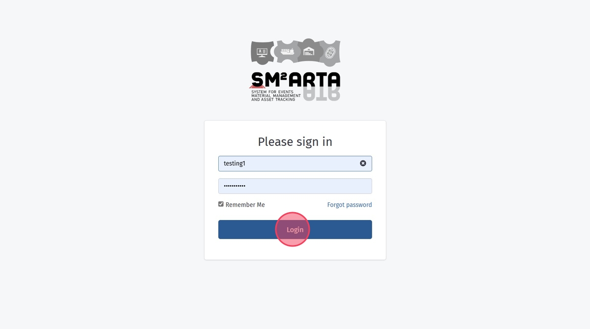
The Material Planning Manager (MPM) interface provides comprehensive administrative access to every SM2ARTA feature. The home dashboard surfaces live system activity and active-event status at a glance.
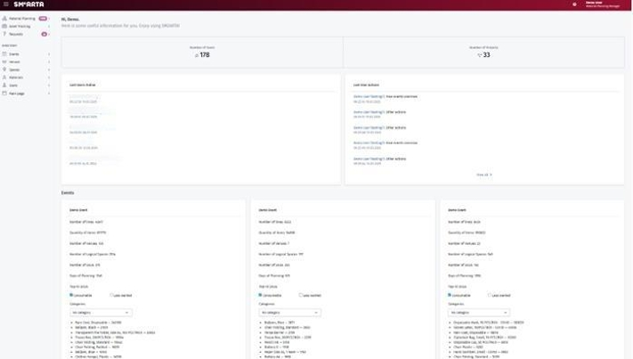
Build the system's content through the Directory section: start by adding users, then venues and spaces, then the FF&E catalog — all through one consistent interface, without developer support.
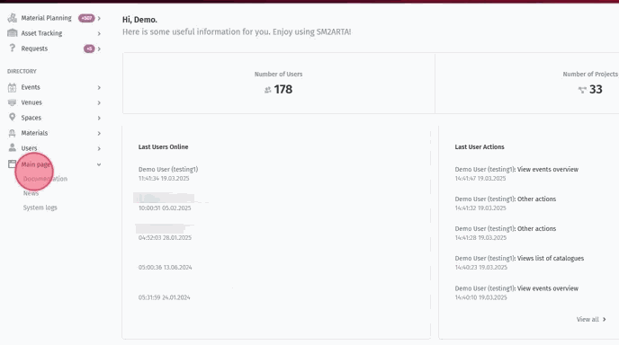
The Functional Material Planner (FMP) interface is simplified and streamlined so teams focus on planning, not on learning software. Embedded guides make onboarding a five-minute exercise.
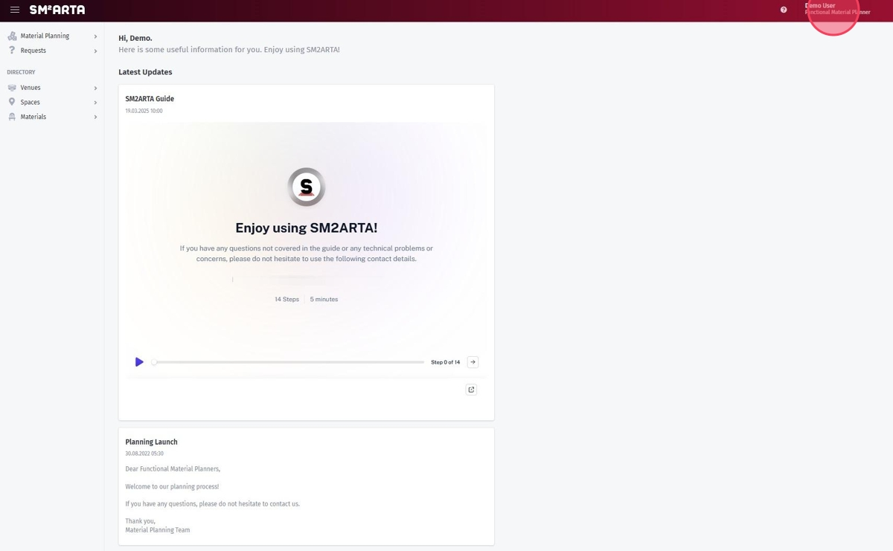
The planning flow mirrors a familiar e-commerce experience. The planner creates the venues and spaces they are responsible for, then populates them with the materials they need — item by item, space by space. Once every functional team has completed their input, the MPM sees the combined, de-duplicated asset list and exports it to Excel for downstream procurement or contractor hand-off. Lists of several thousand lines are routine.
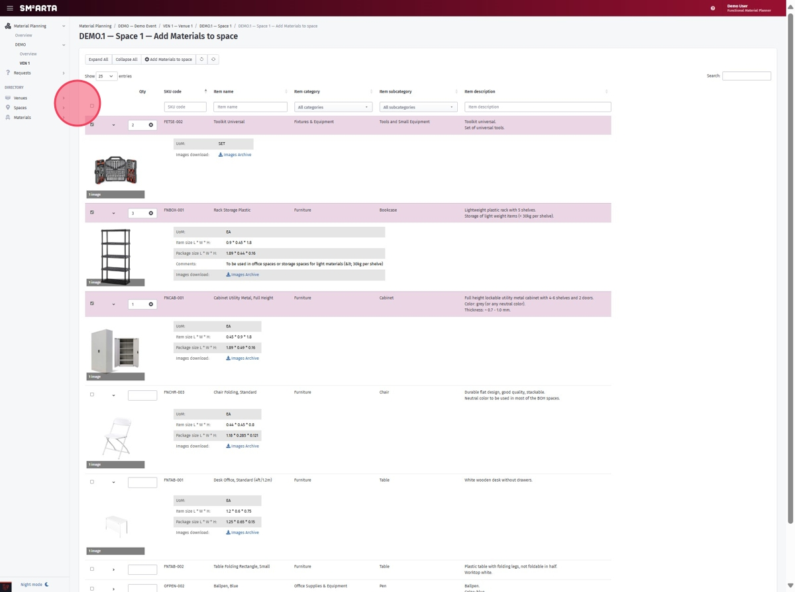
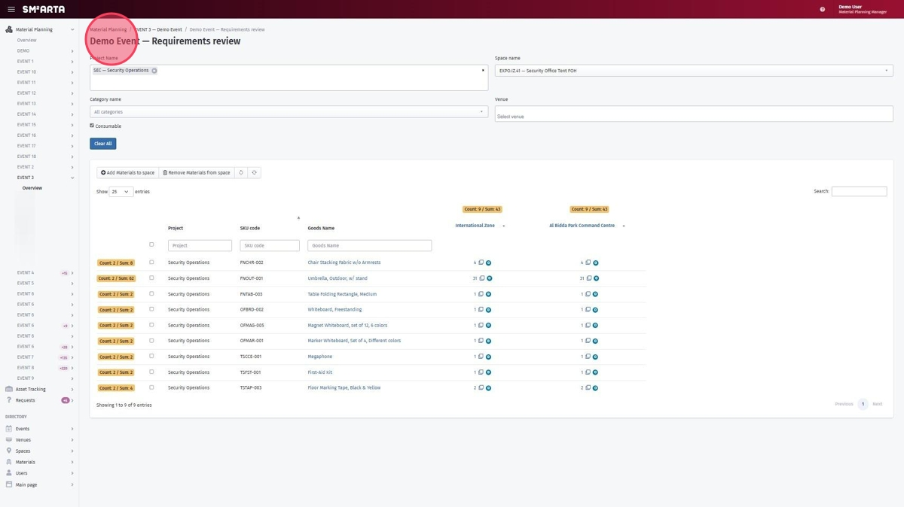
The Venue Logistics Manager (VLM) bridges planning and execution. VLMs monitor the progress of functional planners and create the comprehensive bump-in plans that coordinate delivery, installation, and operational readiness across every venue.
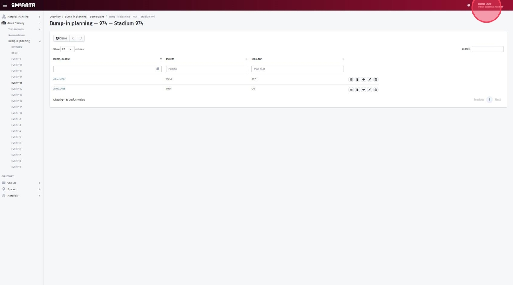
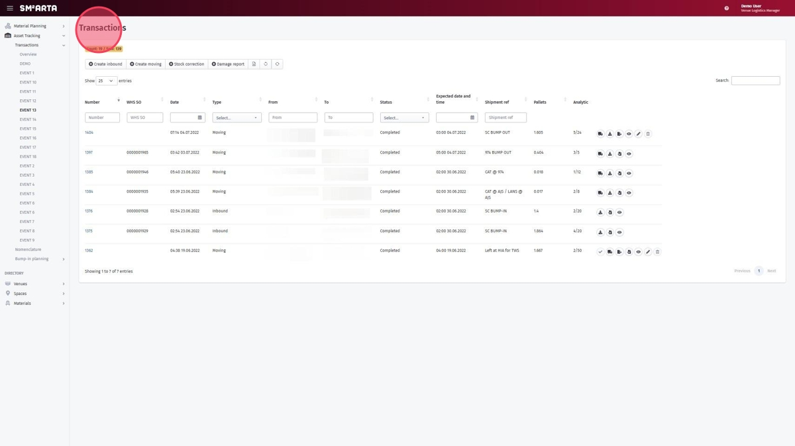
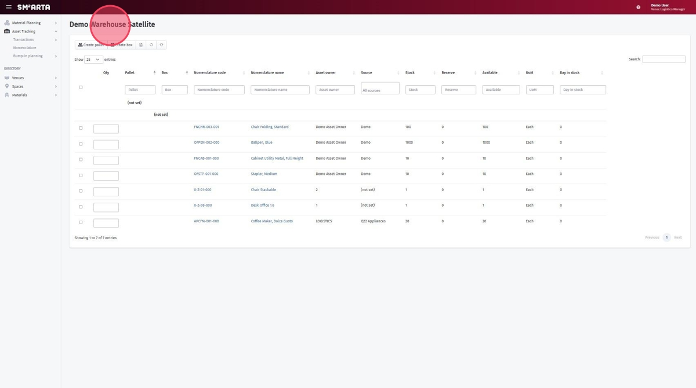
The most-used operational documents — delivery notes, inventory lists, damage reports — generate in seconds from live data, in the correct format, ready to download or share.
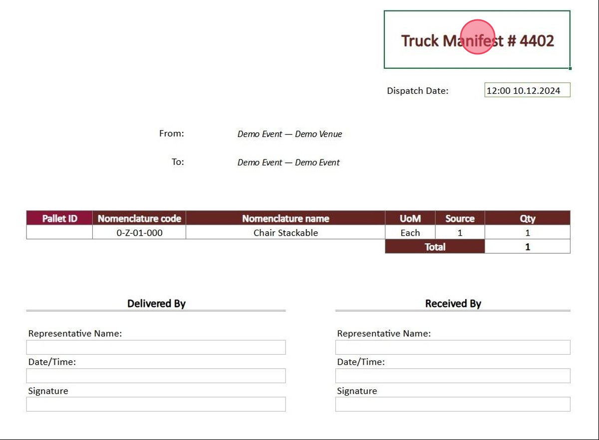
SM2ARTA has been extended with five major capabilities delivered specifically for the next large-scale sporting events — cross-venue scale, deeper traceability, real-time integrations, and raised security posture.
One platform. Three role-tailored interfaces. Zero installation. Proven at major sporting events and extended for 2026 with deeper integrations and enterprise-grade security.
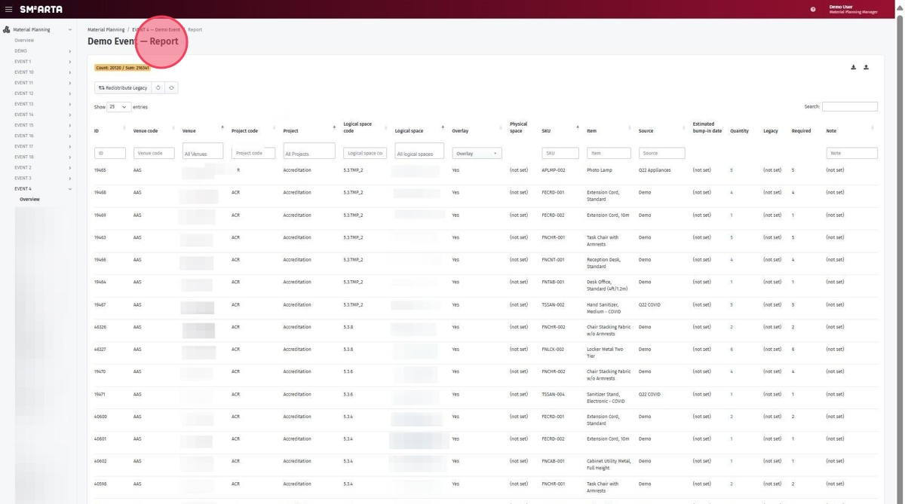